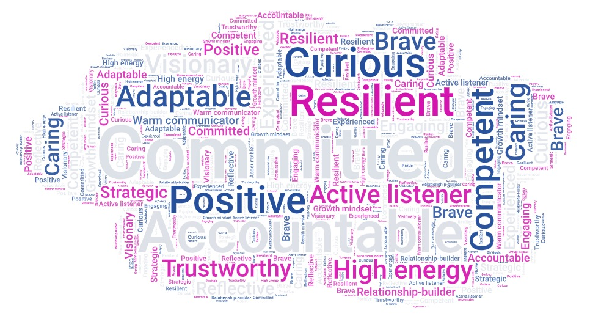

Curriculum Vitae
Strategic AM/CSM Profile · Customer Value & Commercial Growth · Long‑Term Partnerships
Profile
I help organisations turn customer insight into commercial alignment — ensuring that adoption, outcomes and growth are built on trust, structure and delivery.
Strategic AM/CSM hybrid with a calm, structured style and a strong ability to build trust‑based partnerships in complex B2B ecosystems.
With experience across travel, tech and SaaS, I act as the operational and commercial bridge between customers, partners and internal teams — simplifying complexity, aligning stakeholders and guiding transitions from legacy setups to scalable, modern solutions.
"Anna builds genuine, trust-based relationships with both clients and colleagues, and she is consistently recognized for being competent, kind, helpful, and thoroughly professional."
Core Strengths
Builds senior, trust‑based partnerships through calm presence, active listening and the ability to navigate complex stakeholder landscapes with ease.
Connects commercial goals with customer needs to identify opportunities, remove blockers and drive sustainable value. Known for balancing strategic direction with practical execution.
Brings structure to ambiguity, sets direction and enables teams and customers to move forward with shared understanding and confidence.
Bridges technical, operational and commercial perspectives into clear recommendations that support decision‑making and accelerate progress.
Experience
Over 20 years of experience driving customer value, commercial growth and long‑term partnerships across Scandinavia and EMEA within global tech and SaaS.
Amadeus - Global Tech & SaaS
2003 – 2026
Building long‑term customer value across diverse markets · 2023–2026
Managed an EMEA customer portfolio across SMB–enterprise, driving adoption, value and long‑term retention in complex, multi‑market environments. Acted as the operational and commercial bridge between customers, partners and internal teams — simplifying complexity, aligning stakeholders and guiding transitions from legacy setups to modern, scalable solutions.
Building relationships, driving adoption and commercial growth · 2003–2022
Managed a strategic portfolio across Scandinavia and EMEA, driving commercial growth, long‑term partnerships and successful transitions from legacy setups to modern SaaS solutions. Acted as the commercial point of contact for enterprise and mid‑market customers, aligning expectations, reducing friction and ensuring that value, delivery and commercial outcomes moved in the same direction.
Various Travel Agencies
1994 – 2003 · 9 years
Where it all started
In practice
More examples available on request — reach out via the links below.
What I stand for
Curiosity is my inner drive. I explore how ideas, behaviours and systems connect, and turn that insight into real impact for customers, teams and organisations.
I own my results, the good and the challenging. I take responsibility, stay committed and follow through. People know they can rely on me.
I stick to the truth. I set realistic expectations, communicate openly and follow through. What you see is what you get — the foundation of every relationship I build.
Ways of working
Clear, warm and intentional - always professional and respectful.
Connecting people and dots. Keeping goals in focus across teams.
Iterative. From idea to prototype to refinement. Simplifying complexity.
Adaptability keeps me on course when things shift.
Learning agility and resilience. Effort and grit take you further than talent alone.
Genuine passion. Early adopter. I learn by doing.
Learns new domains quickly and adapts continuously. Uses AI as an amplifier and thinking partner.
Elevates others and creates momentum through openness, shared ownership and psychological safety.
Peer Feedback
Collected over the years from colleagues, managers and peers — written and spoken feedback that has stayed with me.

Education & Learning
Certifications
Selected Programs & Courses
Tools, Languages & Volunteering
Tools
Languages
Volunteering